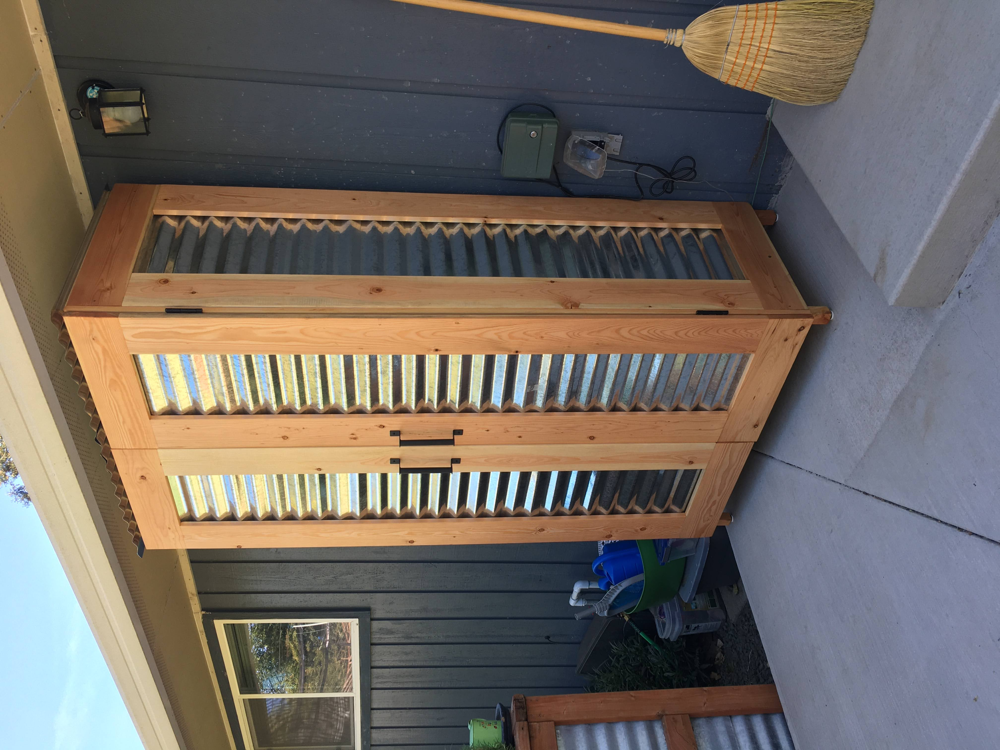
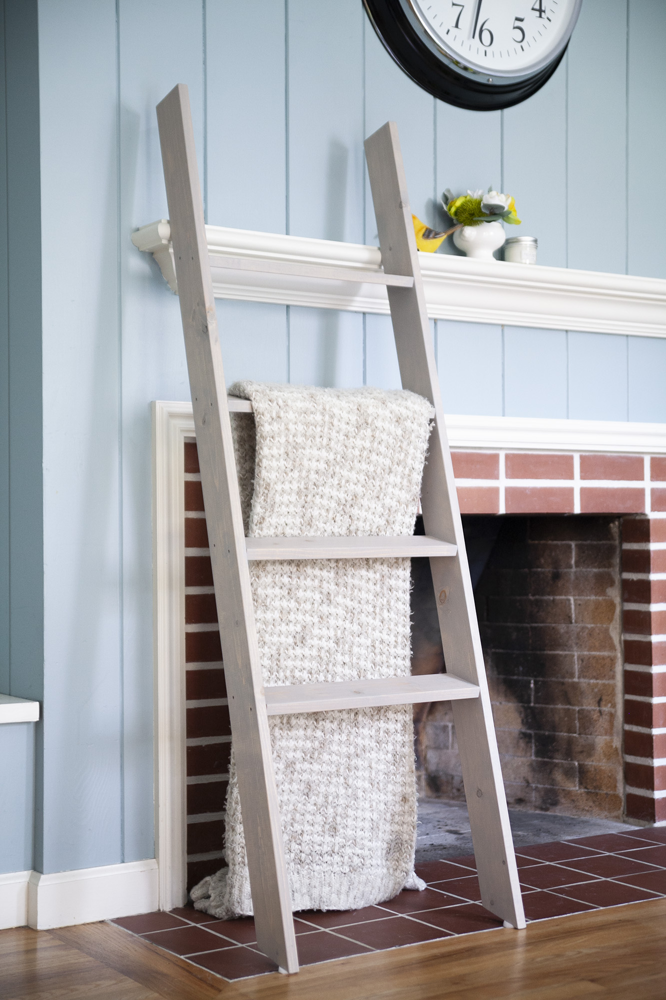

We've lived in our current home for a number years, and our "organization system" in our backyard has consisted of storing things in our shed, the side of the house where no one enters but us, and directly on the patio under the eave of the roof. The shed has long since been stuffed full, and the side yard a nice place to put large things we dont mind being left in the sun and rain. We needed storage that is protected from the weather and in a convenient location for many small outdoor things that wouldnt look a perpetual garage sale display on our patio. I gathered the courage to show family and friends that my building skills were actually useful. I could solve problems with these skills of mine, and I was going to prove it! And so I built the patio cabinet.
Joking aside, I learned a lot with this project. It was the first time I had constructed a frame and panel piece of furniture, and a large one at that. Standing at 7 feet tall, 38" wide and 2 feet deep, it is the largest piece in my collection of things built out of wood. If I could go back and change the way I went about building it, I would have made the interior frame more rigid, as that would have helped keep the open side with the doors less likely to rack and mis-align the doors. Wood being sensitive to moisture level changes will expand and contract, and can also warp and twist in unexpected ways. I would have liked to have used wood that was more stable at the time of milling and assembly, but lacking time and tooling to achieve my ideal, I was still able to make my inexpensive building materials work out.

I was cruising on the information super highway looking for quick and simple wood projects, and saw a photo of ladder being used to hold blankets. I have seen ladders used as shelves and decorative pieces both indoors and out, my family have used old deck railings for vine growth in our backyard, but I had not considered it for something like blankets. My wife was confused when I told her I was going to make a blanket ladder, she hadn't commissioned such a piece, and found the whole thing very humorous and silly. After cutting down materials, sanding, assembling and then finishing the piece, I had a ladder constructed with blankets in-mind. This type of decoriation is not my cup of tea (nor my wife's), so on a whim I posted it for sale one evening and by mid-morning the next day it was sold.
